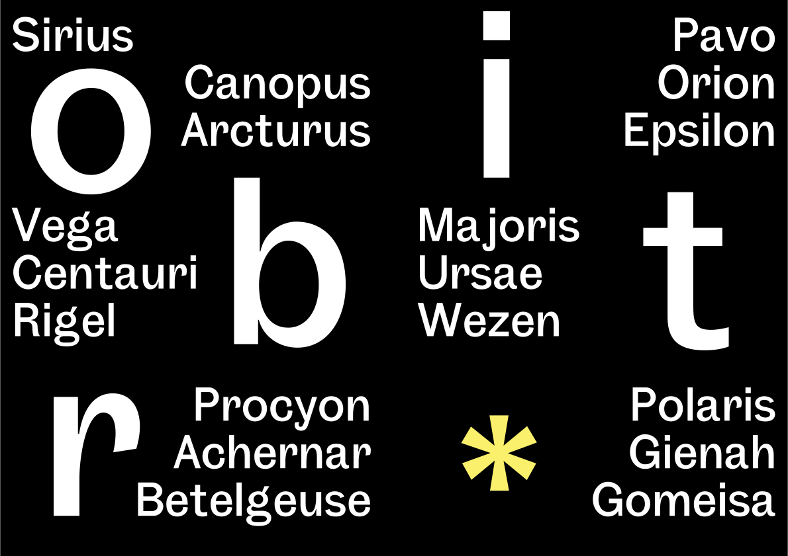

Aa Bb Cc Dd Ee Ff Gg Hh Ii Jj Kk Ll Mm Nn Oo Pp Qq Rr Ss Tt Uu Vv Ww Xx Yy Zz /1234567890.,!?*\

Les poussières et les débris que les comètes abandonnent à chacun de leurs retours près du Soleil se dispersent peu à peu le long de leurs orbites en donnant naissance à des essaims de météorites.
Lorsque la Terre, dans sa ronde autour du Soleil, croise ces essaims, les petits corps qu’ils rassemblent s’abattent dans l’atmosphère en y provoquant des pluies d’étoiles filantes. Certaines comètes connaissent un destin tragique. Leur noyau se fragmente brutalement, généralement après un passage à très courte distance du Soleil. Il peut arriver aussi qu’une comète heurte une planète: en juillet 1994, les fragments du noyau de la comète Shoemaker-Levy se sont précipités sur Jupiter; de telles collisions doivent être fréquentes à l’échelle cosmique et il n’est pas exclu que l’une d’elles ait provoqué, sur la Terre, il y a plus de 65 millions d’années, la disparition brutale, de nombreuses espèces vivantes. La découverte de SL9 a tout de suite été remarquable pour deux raisons...